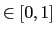

Next: Program: simple_volops
Up: Standard image/volume operations (ops)
Previous: Program: simple_simimgs
Contents
Program: simple_stackops
simple_stackops is a program that provides standard single-particle image processing routines that are applied to MRC or SPIDER stacks.
$ SIMPLE_STACKOPS [stk=<stack.ext>] [stk2=<stack2.ext>] [nptcls=<nr of imgs>]}
[smpd=<sampling distance(in A)>] [outstk=<outstk.ext>] [split=<nr of partitions
to split the stack into>] [oritab=<SIMPLE alignment doc>] [hp=<high-pass
limit(in A)>](in A)>] [shalgn=<yes|no{no}>] [mul=<shift multiplication
factor{1}>] [trs=<origin shift halfwidth(in pixels){0}] [lp=<low-pass
limit(in A){20}>] [state=<state to extract>] [frac=<fraction of ptcls to
extract{1}>] [class=<cluster2extract>] [snr=<signal2noise ratio>] [msk=<mask
radius(in pixels){box/2}>] [vis=<yes|no>] [bin=<binarize{no}>]
[acf=<yes|no{no}>] [phrand=<yes|no{no}>] [fromp=<start ptcl>] [top=<stop
ptcl>] [nran=<number of random images to select>] [newbox=<scaled box>]
[scale=<scale factor{1}>] [hfun=<sigm|tanh|lin{sigm}>]
[norm=<yes|no{no}>] [noise_norm=<yes|no>] [nthr=<nr of openMP threads{1}>]
[avg=<yes|no>] [filetab=<filenames.txt>] [stats=<yes|no{yes}>]
[ctf=<yes|no|flip|mul|abs{no}>] [kv=<acceleration voltage(in kV){300.}>]
[fraca=<frac amp contrast{0.07}>] [cs=<spherical aberration constant(in
mm){2.7}>] [deftab=<text file with defocus values>] [ft2img=<yes|no{no}>]
[frameavg=<nr of frames to average{0}>] [clip=<clipped box size{box}>]
[compare=<yes|no{no}>] [mirr=<no|x|y{no}>] [neg=<yes|no{no}>] [box=<image
size(in pixels)>] [outfile=<output_params.txt>] [ctfsq=<yes|no{no}>]
[masscen=<yes|no{no}>] [thres=<threshold4bin[0,1]{0.6}>] [inner=<inner mask
radius(in pixels)>] [width=<pixels falloff inner mask{10}>]
[append=<yes|no{no}>]
Comments: You can do many things with simple_stackops. Inputting two stacks of the same size results in the calculation of the joint Fourier Ring Correlation (FRC) between the images. Inputting no stacks, but setting nptcls, results in production of nptcls pure noise images, unless ctf=yes, then CTF images are produced. Filtering is controlled by the hp and lp arguments. If you input an alignment document (via oritab) shalgn=yes will produce a shift-aligned stack based on the inputted orientations, whereas if you do not input an alignment document, the alignment will be done in a reference-free manner (remember to set trs to some nonzero value). If you want to centre the images based on their centre of mass, set masscen=yes. If you want to extract a particular state, give an alignment document (oritab) and set state to the state that you want to extract. If you want to select the fraction of best particles (according to the goal function), input an alignment doc (oritab) and set frac. You can combine the state and frac options. If you want to apply noise to images, give the desired signal-to-noise ratio via snr. If you want to mask your images with a spherical mask with a soft falloff, set msk to the radius in pixels. If you want to binarize your images, set bin=yes. If thres is defined, the images are sigmoid normalised to

and threshold binarized. If thres is not defined the foreground/background pixels are assigned by sort-means (a variant of the continuous k-means algorithm where the initial centres are obtained by sorting the real values). If you want to calculate the autocorrelation function of your images set acf=yes. If you want to randomise the phases of the Fourier transforms of your images, set phrand=yes and lp to the desired low-pass limit. If you want to extract a contiguous subset of particle images from the stack, set fromp and top. If you want to fish out a number of particle images from your stack at random, set nran to some nonzero integer number less than nptcls. If you want to resize you images, set the desired box to newbox or use the scale option. It is often convenient to use scale in combination with clip to resize images. If you want to normalise your images, set norm=yes. hfun controls the normalisation function. With avg=yes the global average of the inputted stack is calculated. With ctf=flip the contrast inversions due to the CTF are corrected by the infamous (but effective) phase-flipping heuristic. This requires additional input of CTF-related parameters (kv, fraca and cs) in addition to the defocus and astigmatism angle values, communicated either via oritab or via deftab. Even if you do initially phase-flip the images, which you should do for initial model production with PRIME, you can turn on the Wiener restoration later anyway, to accomplish correct weighting of information around the CTF zeroes and maximal noise reduction. ft2img=yes produces images of the square power spectrum of the images in stk. If you define frameavg to some integer number larger than one averages with chunk sizes of frameavg are produced, which may be useful for analysis of dose-fractionated image series. clip can be used to re-window or pad the images to a different box size. When compare=yes, the two inputted stacks are Fourier ring correlated. neg inverts the contrast of the images. ctfsq applies the squared CTF to the inputted images. inner is for applying an inner mask with fall-off width width. Finally, append is for appending stack stk2 with stack stk, so that the stk2 images occur last in the series and the stk name is preserved.
Next: Program: simple_volops
Up: Standard image/volume operations (ops)
Previous: Program: simple_simimgs
Contents
Hans Elmlund
2016-05-24